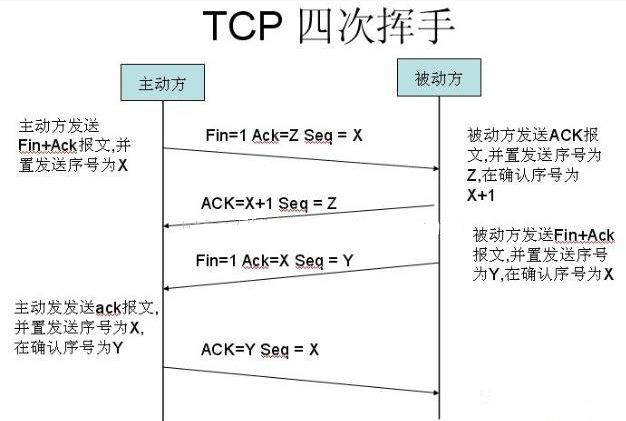
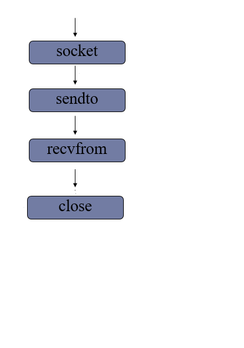
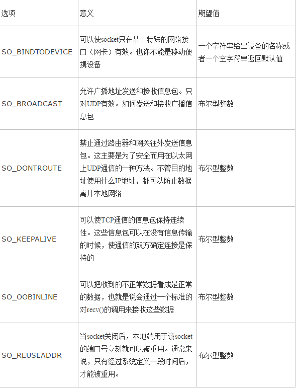
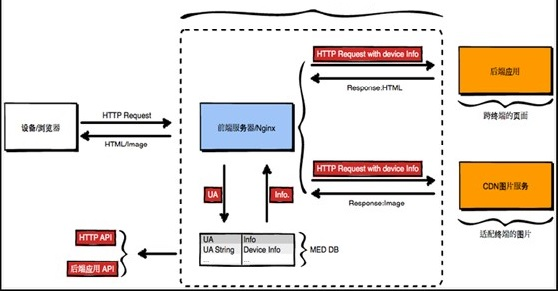

IO网络编程
| Tedu Python 教学部 |
|---|
| Author：吕泽 |
IO网络编程Linux 操作系统及其组成shell命令文件操作命令IO 文件字节串（bytes）文件读写其他操作刷新缓冲区文件偏移量拷贝文件描述符文件管理函数网络编程基础OSI七层模型四层模型（TCP/IP模型）数据传输过程网络协议网络基础概念传输层服务面向连接的传输服务（基于TCP协议的数据传输）面向无连接的传输服务（基于UDP协议的数据传输）socket套接字编程套接字介绍tcp套接字编程服务端流程客户端流程tcp 套接字数据传输特点网络收发缓冲区tcp粘包UDP套接字编程服务端流程客户端流程socket套接字属性struct模块进行数据打包HTTP传输HTTP协议 （超文本传输协议）HTTP请求（request）http响应（response）
Linux 操作系统及其组成
- 操作系统的作用
操作系统（OS）是管理计算机硬件与软件资源的计算机程序，同时也是计算机系统的内核与基石。操作系统需要处理如管理与配置内存、决定系统资源供需的优先次序、控制输入设备与输出设备、操作网络与管理文件系统等基本事务。操作系统也提供一个让用户与系统交互的操作界面。
- Linux操作系统组成
一个典型的Linux操作系统组成为：Linux内核，文件系统，命令行shell，图形界面和桌面环境，并包各种工具和应用软件。
- Linux内核: Linux操作系统的核心代码
- 文件系统：通常指称管理磁盘数据的系统，可将数据以目录或文件的型式存储。每个文件系统都有自己的特殊格式与功能
- shell命令： 接收用户命令，然后调用相应的应用程序，并根据用户输入的指令来反馈给用户指定的信息。

shell命令
文件操作命令
- linux下的目录结构

| 作用 | 命令 |
|---|---|
| 切换工作目录 | cd |
| 查看文件 | ls ， ls -l ， ls -a |
| 复制文件 | cp -r |
| 移动文件 | mv |
| 删除文件 | rm -rf ， rmdir |
| 创建文件夹 | mkdir -p |
| 创建文件 | touch |
| 查看文件内容 | cat |
IO
- 定义
在内存中存在数据交换的操作认为是IO操作,比如和终端交互 ,和磁盘交互，和网络交互等
- 程序分类
- IO密集型程序：在程序执行中有大量IO操作，而cpu运算较少。消耗cpu较少，耗时长。
- 计算密集型程序：程序运行中计算较多，IO操作相对较少。cpu消耗多，执行速度快，几乎没有阻塞。
文件
文件是保存在持久化存储设备(硬盘、U盘、光盘..)上的一段数据。从格式编码角度分为文本文件（打开后会自动解码为字符）、二进制文件(视频、音频等)。在Python里把文件视作一种类型的对象，类似之前学习过的其它类型。
字节串（bytes）
在python3中引入了字节串的概念，与str不同，字节串以字节序列值表达数据，更方便用来处理二进程数据。因此在python3中字节串是常见的二进制数据展现方式。
- 普通的ascii编码字符串可以在前面加b转换为字节串，例如：b'hello'
- 字符串转换为字节串方法 ：str.encode()
- 字节串转换为字符串方法 : bytes.decode()
文件读写
对文件实现读写的基本操作步骤为：打开文件，读写文件，关闭文件
代码实现： day4/file_open.py
x# 打开文件# f = open('a.py','r+') # 要求文件存在# f = open('a.py','w') # 文件不存在创建存在清空# f = open('a.py','a') # 文件不存在创建,存在追加# f = open('a.py','rb') # 加b后续的读写都以字节串操作"""所有文件都可以用二进制方式打开(b)但是二进制格式文件则不能用文本方式打开(后续读写出错)"""f = open('mm.jpg','r')# 通过f 进行读写操作# 关闭 文件对象f.close()代码实现： day4/file_read.py
xxxxxxxxxx# 打开文件f = open('Install.txt','r')# 读取文件# data = f.read()# print(data)# 循环读取文件内容# while True:# # 如果读到文件结尾 read()会读到空字符串# data = f.read(1024)# # 读到结尾跳出循环# if not data:# break# print(data)# 读取文件一行内容# data = f.readline(5)# print(data)# data = f.readline(5)# print(data)# 读取内容形成列表# data = f.readlines(20) # 读取前20个字节所在的所有行# print(data)# 使用for循环读取每一行for line in f: print(line) # 每次迭代到一行内容# 关闭f.close()代码实现： day4/file_write.py
xxxxxxxxxx# 打开文件# f = open('a.py','a')f = open('a.py','w')# 写操作# f.write("hello 死鬼\n")# f.write("哎呀,干啥\n")# 将列表中每一项分别写入文件内l = ['hello world\n','hello kitty\n']f.writelines(l)# f.close()
- 打开文件
xxxxxxxxxxfile_object = open(file_name, access_mode='r', buffering=-1)功能：打开一个文件，返回一个文件对象。参数：file_name 文件名； access_mode 打开文件的方式,如果不写默认为‘r’ 文件模式 操作 r 以读方式打开 文件必须存在 w 以写方式打开 文件不存在则创建，存在清空原有内容 a 以追加模式打开 r+ 以读写模式打开 文件必须存在 w+ 以读写模式打开文件 不存在则创建，存在清空原有内容 a+ 以读写模式打开 追加模式 rb 以二进制读模式打开 同r wb 以二进制写模式打开 同w ab 以二进制追加模式打开 同a rb+ 以二进制读写模式打开 同r+ wb+ 以二进制读写模式打开 同w+ ab+ 以二进制读写模式打开 同a+ buffering 1表示有行缓冲，默认则表示使用系统默认提供的缓冲机制。返回值：成功返回文件操作对象。- 读取文件
read([size]) 功能： 来直接读取文件中字符。 参数： 如果没有给定size参数（默认值为-1）或者size值为负，文件将被读取直至末尾，给定size最多读取给定数目个字符（字节）。 返回值： 返回读取到的内容
- 注意：文件过大时候不建议直接读取到文件结尾，读到文件结尾会返回空字符串。
readline([size]) 功能： 用来读取文件中一行 参数： 如果没有给定size参数（默认值为-1）或者size值为负，表示读取一行，给定size表示最多读取制定的字符（字节）。 返回值： 返回读取到的内容
readlines([sizeint]) 功能： 读取文件中的每一行作为列表中的一项 参数： 如果没有给定size参数（默认值为-1）或者size值为负，文件将被读取直至末尾，给定size表示读取到size字符所在行为止。 返回值： 返回读取到的内容列表
文件对象本身也是一个可迭代对象，在for循环中可以迭代文件的每一行。
xxxxxxxxxxfor line in f: print(line)- 写入文件
write(string) 功能: 把文本数据或二进制数据块的字符串写入到文件中去 参数：要写入的内容
- 如果需要换行要自己在写入内容中添加\n
writelines(str_list) 功能：接受一个字符串列表作为参数，将它们写入文件。 参数: 要写入的内容列表
- 关闭文件
打开一个文件后我们就可以通过文件对象对文件进行操作了，当操作结束后使用close（）关闭这个对象可以防止一些误操作，也可以节省资源。
file_object.close()
- with操作
python中的with语句使用于对资源进行访问的场合，保证不管处理过程中是否发生错误或者异常都会执行规定的“清理”操作，释放被访问的资源，比如有文件读写后自动关闭、线程中锁的自动获取和释放等。
with语句的语法格式如下：
xxxxxxxxxxwith context_expression [as target(s)]: with-body通过with方法可以不用close(),因为with生成的对象在语句块结束后会自动处理，所以也就不需要close了，但是这个文件对象只能在with语句块内使用。
xxxxxxxxxxwith open('file','r+') as f: f.read()xxxxxxxxxx"""with.py使用with 打开文件"""# 生成文件对象fwith open('a.py') as f:data = f.read()print(data)# with语句块结束 f 自动销毁
注意
- 加b的打开方式读写要求必须都是字节串
- 无论什么文件都可以使用二进制方式打开，但是二进制文件使用文本方式打开读写会出错
其他操作
刷新缓冲区
缓冲:系统自动的在内存中为每一个正在使用的文件开辟一个缓冲区，从内存向磁盘输出数据必须先送到内存缓冲区，再由缓冲区送到磁盘中去。从磁盘中读数据，则一次从磁盘文件将一批数据读入到内存缓冲区中，然后再从缓冲区将数据送到程序的数据区。
刷新缓冲区条件：
缓冲区被写满
程序执行结束或者文件对象被关闭
行缓冲遇到换行
程序中调用flush()函数

代码实现： day4/buffer.py
xxxxxxxxxx# f = open('a.py','w',1) # 行缓冲f = open('a.py','w')while True: data = input(">>") if not data: break f.write(data + '\n') f.flush() # 刷新缓冲区f.close()
flush() 该函数调用后会进行一次磁盘交互，将缓冲区中的内容写入到磁盘。
文件偏移量
代码实现： day4/seek.py
xxxxxxxxxx# 以r,w打开文件偏移量在开头，以a打开文件偏移量在结尾f = open("mm.jpg",'rb+')print(f.tell())# f.write("Hello world")## print(f.tell())# 以开头为基准向后移动5个字符f.seek(1024,0)f.write('你好'.encode())# data = f.read()# print(data)f.close()拷贝
xxxxxxxxxx"""将一个文件拷贝一份，文件可能是文本文件也可能是二进制文件"""# 输入文件名称filename = input("File:")try: fr = open(filename,'rb') # 二进制文件操作except FileNotFoundError as e: print(e)else: fw = open('file.jpg','wb') #循环读写 while True: data = fr.read(1024) if not data: # 读取结束 break fw.write(data) # 将读取内容写入 fr.close() fw.close()xxxxxxxxxx"""从终端输入一个单词,可以打印出单词及其解释,如果没有这个单词则打印 "没有该单词"""word = input("Word:") # 要查找的单词# 打开文件 'r'f = open('dict.txt')# 每次获取一行for line in f:w = line.split(' ')[0]# 如果遍历到的单词已经大于目标,就结束查找if w > word:print("没有找到该单词")breakelif w == word:print(line)breakelse:print("没有找到单词")f.close()
xxxxxxxxxx"""空洞文件"""f = open('test','wb')f.write(b'START')f.seek(1024*1024*100,2)f.write(b'END')f.close()
- 定义
打开一个文件进行操作时系统会自动生成一个记录，记录中描述了我们对文件的一系列操作。其中包括每次操作到的文件位置。文件的读写操作都是从这个位置开始进行的。
- 基本操作
tell() 功能：获取文件偏移量大小
seek(offset[,whence]) 功能:移动文件偏移量位置 参数：offset 代表相对于某个位置移动的字节数。负数表示向前移动，正数表示向后移动。 whence是基准位置的默认值为 0，代表从文件开头算起，1代表从当前位置算起，2 代表从文件末尾算起。
- 必须以二进制方式打开文件时基准位置才能是1或者2
xxxxxxxxxx"""seek.py 文件偏移量测试"""# 以r,w打开文件偏移量在开头，以a打开文件偏移量在结尾f = open("mm.jpg",'rb+')print(f.tell())# f.write("Hello world")## print(f.tell())# 以开头为基准向后移动5个字符f.seek(1024,0)f.write('你好'.encode())# data = f.read()# print(data)f.close()
xxxxxxxxxx"""编写一个程序，向一个文件写入如下内容1. 2019-1-1 18:18:182. 2019-1-1 18:18:20每隔2秒写入一次，每条占一行。ctrl-c/红点 结束程序，下次启动后序号要跟之前的连续需要可以在编辑器中实时看到文件写入情况"""import timef = open('log.txt','ab+')# 文件偏移量定位到开头f.seek(0)n = 0# 获取有多少行for line in f:n += 1# f.seek(-29,2) # 移动到最后一行开头# data = f.readline().decode()# n = int(data.split('.')[0]) # 获取行号while True:n += 1time.sleep(2)s = "%d. %s\n"%(n,time.ctime())f.write(s.encode())f.flush() # 随时查看
文件描述符
- 定义
系统中每一个IO操作都会分配一个整数作为编号，该整数即这个IO操作的文件描述符。
- 获取文件描述符
fileno() 通过IO对象获取对应的文件描述符
文件管理函数
- 获取文件大小
os.path.getsize(file)
- 查看文件列表
os.listdir(dir)
- 查看文件是否存在
os.path.exists(file)
- 判断文件类型
os.path.isfile(file)
- 删除文件
os.remove(file)
网络编程基础
计算机网络功能主要包括实现资源共享，实现数据信息的快速传递。
OSI七层模型
制定组织： ISO（国际标准化组织）
作用：使网络通信工作流程标准化
应用层 ： 提供用户服务，具体功能有应用程序实现 表示层 ： 数据的压缩优化加密 会话层 ： 建立用户级的连接，选择适当的传输服务 传输层 ： 提供传输服务 网络层 ： 路由选择，网络互联 链路层 ： 进行数据交换，控制具体数据的发送 物理层 ： 提供数据传输的硬件保证，网卡接口，传输介质
优点
- 建立了统一的工作流程
- 分部清晰，各司其职，每个步骤分工明确
- 降低了各个模块之间的耦合度，便于开发
四层模型（TCP/IP模型）
背景 ： 实际工作中工程师无法完全按照七层模型要求操作，逐渐演化为更符合实际情况的四层

数据传输过程
- 发送端由应用程序发送消息，逐层添加首部信息，最终在物理层发送消息包。
- 发送的消息经过多个节点（交换机，路由器）传输，最终到达目标主机。
- 目标主机由物理层逐层解析首部消息包，最终到应用程序呈现消息。

网络协议
在网络数据传输中，都遵循的规定，包括建立什么样的数据结构，什么样的特殊标志等。
网络基础概念
- IP地址
功能：确定一台主机的网络路由位置
查看本机网络地址命令： ifconfig
结构
IPv4 点分十进制表示 172.40.91.185 每部分取值范围0--255 IPv6 128位 扩大了地址范围
- 域名
定义： 给网络服务器地址起的名字
作用： 方便记忆，表达一定的含义
ping [ip] : 测试和某个主机是否联通
- 端口号（port）
作用：端口是网络地址的一部分，用于区分主机上不同的网络应用程序。
取值范围： 1 -- 65535
1--1023 系统应用或者大众程序监听端口 1024--65535 自用端口
传输层服务
面向连接的传输服务（基于TCP协议的数据传输）
- 传输特征 ： 提供了可靠的数据传输，可靠性指数据传输过程中无丢失，无失序，无差错，无重复。
- 实现手段 ： 在通信前需要建立数据连接，通信结束要正常断开连接。
三次握手（建立连接）
客户端向服务器发送消息报文请求连接 服务器收到请求后，回复报文确定可以连接 客户端收到回复，发送最终报文连接建立

四次挥手（断开连接）
主动方发送报文请求断开连接 被动方收到请求后，立即回复，表示准备断开 被动方准备就绪，再次发送报文表示可以断开 主动方收到确定，发送最终报文完成断开

- 适用情况 ： 对数据传输准确性有明确要求，传数文件较大，需要确保可靠性的情况。比如：网页获取，文件下载，邮件收发。
面向无连接的传输服务（基于UDP协议的数据传输）
- 传输特点 ： 不保证传输的可靠性，传输过程没有连接和断开，数据收发自由随意。
- 适用情况 ： 网络较差，对传输可靠性要求不高。比如：网络视频，群聊，广播
面试要求
- OSI七层模型介绍一下，tcp/ip模型是什么？
- tcp服务和udp服务有什么区别？
- 三次握手和四次挥手指什么，过程是怎样的？
socket套接字编程
套接字介绍
- 套接字 ： 实现网络编程进行数据传输的一种技术手段
- Python实现套接字编程：import socket
- 套接字分类
流式套接字(SOCK_STREAM): 以字节流方式传输数据，实现tcp网络传输方案。(面向连接--tcp协议--可靠的--流式套接字)
数据报套接字(SOCK_DGRAM):以数据报形式传输数据，实现udp网络传输方案。(无连接--udp协议--不可靠--数据报套接字)

tcp套接字编程
服务端流程
代码实现：day5/tcp_server.py
xxxxxxxxxx"""tcp_server.py tcp套接字服务端功能流程重点代码注意 ： 注意流程和函数使用"""import socketfrom time import sleep# 创建TCP套接字sockfd = socket.socket(socket.AF_INET,socket.SOCK_STREAM)# 绑定地址sockfd.bind(('0.0.0.0',8889))# 设置监听sockfd.listen(5)# 阻塞等待客户端连接while True:print("Waiting for connect...")try:connfd,addr = sockfd.accept()print("Connect from",addr) # 打印连接的客户端except KeyboardInterrupt:print("服务端退出")breakexcept Exception as e:print(e)continue# 收发消息while True:data = connfd.recv(5)# 连接的客户端退出，recv会立即返回空字符串if not data:breakprint(data.decode())sleep(0.1)n = connfd.send(b"Thanks#")print("Send %d bytes"%n)connfd.close()# 关闭套接字sockfd.close()
- 创建套接字
xxxxxxxxxxsockfd=socket.socket(socket_family=AF_INET,socket_type=SOCK_STREAM,proto=0)功能：创建套接字参数： socket_family 网络地址类型 AF_INET表示ipv4 socket_type 套接字类型 SOCK_STREAM(流式) SOCK_DGRAM(数据报) proto 通常为0 选择子协议返回值： 套接字对象- 绑定地址
本地地址 ： 'localhost' , '127.0.0.1' 网络地址 ： '172.40.91.185' 自动获取地址： '0.0.0.0'
xxxxxxxxxxsockfd.bind(addr) 功能： 绑定本机网络地址参数： 二元元组 (ip,port) ('0.0.0.0',8888)- 设置监听
xxxxxxxxxxsockfd.listen(n)功能 ： 将套接字设置为监听套接字，确定监听队列大小参数 ： 监听队列大小- 等待处理客户端连接请求
xxxxxxxxxxconnfd,addr = sockfd.accept()功能： 阻塞等待处理客户端请求返回值： connfd 客户端连接套接字 addr 连接的客户端地址- 消息收发
xxxxxxxxxxdata = connfd.recv(buffersize)功能 : 接受客户端消息参数 ：每次最多接收消息的大小返回值： 接收到的内容n = connfd.send(data)功能 : 发送消息参数 ：要发送的内容 bytes格式返回值： 发送的字节数- 关闭套接字
xxxxxxxxxxsockfd.close()功能：关闭套接字客户端流程
代码实现：day5/tcp_client.py
xxxxxxxxxx"""tcp_client.py tcp客户端流程重点代码"""from socket import *# 创建tcp套接字sockfd = socket() # 默认参数-->tcp套接字# 连接服务端程序server_addr = ('172.40.91.143',8889)sockfd.connect(server_addr)# 发送接收消息while True:data = input("Msg:")# data为空退出循环if not data:breaksockfd.send(data.encode()) # 发送字节串data = sockfd.recv(1024)print("Server:",data.decode())# 关闭套接字sockfd.close()

- 创建套接字
注意:只有相同类型的套接字才能进行通信
- 请求连接
xxxxxxxxxxsockfd.connect(server_addr)功能：连接服务器参数：元组 服务器地址- 收发消息
注意： 防止两端都阻塞，recv send要配合
- 关闭套接字
tcp 套接字数据传输特点
- tcp连接中当一端退出，另一端如果阻塞在recv，此时recv会立即返回一个空字串。
- tcp连接中如果一端已经不存在，仍然试图通过send发送则会产生BrokenPipeError
- 一个监听套接字可以同时连接多个客户端，也能够重复被连接

网络收发缓冲区
- 网络缓冲区有效的协调了消息的收发速度
- send和recv实际是向缓冲区发送接收消息，当缓冲区不为空recv就不会阻塞。
tcp粘包
原因：tcp以字节流方式传输，没有消息边界。多次发送的消息被一次接收，此时就会形成粘包。
影响：如果每次发送内容是一个独立的含义，需要接收端独立解析此时粘包会有影响。
处理方法
- 人为的添加消息边界
- 控制发送速度
UDP套接字编程
服务端流程
代码实现：day6/udp_server.py
xxxxxxxxxx"""udp_server.py udp服务端重点代码"""from socket import *# 创建UDP套接字sockfd = socket(AF_INET,SOCK_DGRAM)# 绑定地址server_addr = ('0.0.0.0',8888)sockfd.bind(server_addr)# 循环收发while True:data,addr = sockfd.recvfrom(1024)print("收到的消息:",data.decode())sockfd.sendto(b'Thanks',addr)# 关闭套接字sockfd.close()
- 创建数据报套接字
xxxxxxxxxxsockfd = socket(AF_INET,SOCK_DGRAM)- 绑定地址
xxxxxxxxxxsockfd.bind(addr)- 消息收发
xxxxxxxxxxdata,addr = sockfd.recvfrom(buffersize)功能： 接收UDP消息参数： 每次最多接收多少字节返回值： data 接收到的内容 addr 消息发送方地址n = sockfd.sendto(data,addr)功能： 发送UDP消息参数： data 发送的内容 bytes格式 addr 目标地址返回值：发送的字节数- 关闭套接字
xxxxxxxxxxsockfd.close()客户端流程

代码实现：day6/udp_client.py
xxxxxxxxxx"""http请求过程演示"""from socket import *# tcp套接字 （http-->tcp）s = socket()s.bind(('0.0.0.0',8000))s.listen(3)c,addr = s.accept()print("Connect from",addr)# 获取请求data = c.recv(4096)print(data)# 返回响应response = """HTTP/1.1 200 OKContent-Type:text/htmlHello World"""c.send(response.encode())c.close()s.close()
xxxxxxxxxx"""使用udp完成，从客户端输入单词，得到单词解释客户端可以循环输入单词"""from socket import *# 打开文件 'r'f = open('dict.txt')def find_word(word):f.seek(0) # 每次查找前先将位置定位到开头# 每次获取一行for line in f:w = line.split(' ')[0]# 如果遍历到的单词已经大于目标,就结束查找if w > word:breakelif w == word:return linereturn "没有找到单词"# 创建套接字sockfd = socket(AF_INET,SOCK_DGRAM)sockfd.bind(('0.0.0.0',8888))# 循环接受单词返回单词解释while True:word,addr = sockfd.recvfrom(1024)# 调用查单词result = find_word(word.decode())sockfd.sendto(result.encode(),addr)f.close()sockfd.close()
xxxxxxxxxx# 发送请求，得到结果from socket import *# 服务器地址ADDR = ('127.0.0.1',8888)# 创建套接字sockfd = socket(AF_INET,SOCK_DGRAM)# 循环发送消息while True:data = input("Word:")if not data:breaksockfd.sendto(data.encode(),ADDR)msg,addr = sockfd.recvfrom(1024)print(msg.decode())sockfd.close()
- 创建套接字
- 收发消息
- 关闭套接字
总结 ：tcp套接字和udp套接字编程区别
- 流式套接字是以字节流方式传输数据，数据报套接字以数据报形式传输
- tcp套接字会有粘包，udp套接字有消息边界不会粘包
- tcp套接字保证消息的完整性，udp套接字则不能
- tcp套接字依赖listen accept建立连接才能收发消息，udp套接字则不需要
- tcp套接字使用send，recv收发消息，udp套接字使用sendto，recvfrom
socket套接字属性
代码实现：day6/sock_attr.py
xxxxxxxxxx"""套接字属性介绍"""from socket import *# 创建套接字对象s = socket(AF_INET,SOCK_STREAM)# 设置端口立即重用s.setsockopt(SOL_SOCKET,SO_REUSEADDR,1)s.bind(('172.40.91.143',8888))s.listen(3)c,addr = s.accept()print(s.type) # 套接字类型print(s.family) # 地址类型print(s.getsockname()) # 绑定的地址print(s.fileno()) # 文件描述符print(c.getpeername()) # 获取连接端的地址c.recv(1024)
【1】 sockfd.type 套接字类型
【2】 sockfd.family 套接字地址类型
【3】 sockfd.getsockname() 获取套接字绑定地址
【4】 sockfd.fileno() 获取套接字的文件描述符
【5】 sockfd.getpeername() 获取连接套接字客户端地址
【6】 sockfd.setsockopt(level,option,value) 功能：设置套接字选项 参数： level 选项类别 SOL_SOCKET option 具体选项内容 value 选项值

struct模块进行数据打包
代码实现：day6/struct_recv.py
xxxxxxxxxx"""使用udp，从客户端录入学生信息，在服务端将学生信息写入文件要求每个学生信息占一行ID NAME AGE SCORE"""from socket import *import struct# 定义数据传输格式st = struct.Struct('i28sif')# 创建套接字接受内容s = socket(AF_INET,SOCK_DGRAM)s.bind(('0.0.0.0',8888))# 打开文件f = open('student.txt','a')while True:data,addr = s.recvfrom(1024)# 将信息转换位元组数据 (1,b'lily',13,89.5)data = st.unpack(data)info = "%d %-10s %d %.1f\n"%dataf.write(info)f.flush()f.close()s.close()
代码实现：day6/struct_send.py
xxxxxxxxxxfrom socket import *import struct# 定义数据传输格式st = struct.Struct('i28sif')# 创建套接字接受内容s = socket(AF_INET,SOCK_DGRAM)# 服务端地址ADDR = ('127.0.0.1',8888)while True:print("================================")id = int(input("ID:"))name = input("Name:").encode()age = int(input("Age:"))score = float(input("Score:"))#数据打包data = st.pack(id,name,age,score)s.sendto(data,ADDR)
- 原理： 将一组简单数据进行打包，转换为bytes格式发送。或者将一组bytes格式数据，进行解析。
- 接口使用
xxxxxxxxxxStruct(fmt)功能: 生成结构化对象参数：fmt 定制的数据结构st.pack(v1,v2,v3....)功能: 将一组数据按照指定格式打包转换为bytes参数：要打包的数据返回值： bytes字节串st.unpack(bytes_data)功能： 将bytes字节串按照指定的格式解析参数： 要解析的字节串返回值： 解析后的内容struct.pack(fmt,v1,v2,v3...)struct.unpack(fmt,bytes_data)说明： 可以使用struct模块直接调用pack unpack。此时这两函数第一个参数传入fmt。其他用法功能相同

HTTP传输
HTTP协议 （超文本传输协议）
- 用途 ： 网页获取，数据的传输
- 特点
- 应用层协议，传输层使用tcp传输
- 简单，灵活，很多语言都有HTTP专门接口
- 无状态，协议不记录传输内容
- http1.1 支持持久连接，丰富了请求类型
- 网页请求过程
1.客户端（浏览器）通过tcp传输，发送http请求给服务端 2.服务端接收到http请求后进行解析 3.服务端处理请求内容，组织响应内容 4.服务端将响应内容以http响应格式发送给浏览器 5.浏览器接收到响应内容，解析展示


HTTP请求（request）
代码实现：day6/http_test.py
xxxxxxxxxx"""http请求过程演示"""from socket import *# tcp套接字 （http-->tcp）s = socket()s.bind(('0.0.0.0',8000))s.listen(3)c,addr = s.accept()print("Connect from",addr)# 获取请求data = c.recv(4096)print(data)# 返回响应response = """HTTP/1.1 200 OKContent-Type:text/htmlHello World"""c.send(response.encode())c.close()s.close()
代码实现：day7/http_server.py
xxxxxxxxxx"""httpserver v1.0基本要求: 1. 获取来自浏览区的请求2. 判断请求内容是否为/3. 如果是,则将 index.html 发送给浏览器如果不是,则告知浏览器 sorry4. 注意组织 http 响应格式,判断 200 or 404"""from socket import *# 处理客户端请求def request(connfd):# 直接获取http请求data = connfd.recv(4096)# 防止浏览器断开if not data:return# 提取请求内容request_line = data.decode().split("\n")info = request_line.split(" ")[1]# print("req: ",request_line)# print("info: ",info)# 判断请求内容是否为 /if info== "/":with open("index.html") as f:response = "HTTP/1.1 200 OK\r\n"response += "Content-Type: text/html\r\n"response += "\r\n"response += f.read()else:response = "HTTP/1.1 404 Not found\r\n"response += "Content-Type: text/html\r\n"response += "\r\n"response += "<h2>Sorry...<h2>"# 发送给浏览器connfd.send(response.encode())# 搭建tcp服务sockfd = socket()sockfd.setsockopt(SOL_SOCKET,SO_REUSEADDR,1)sockfd.bind(("0.0.0.0",1111))sockfd.listen(5)while True:connfd,addr = sockfd.accept()print("Connect from ",addr)request(connfd) # 具体处理客户端请求
- 请求行 ： 具体的请求类别和请求内容
xxxxxxxxxxGET / HTTP/1.1请求类别 请求内容 协议版本
请求类别：每个请求类别表示要做不同的事情
xxxxxxxxxxGET : 获取网络资源POST ：提交一定的信息，得到反馈HEAD ： 只获取网络资源的响应头PUT ： 更新服务器资源DELETE ： 删除服务器资源CONNECTTRACE ： 测试OPTIONS ： 获取服务器性能信息
- 请求头：对请求的进一步解释和描述
xxxxxxxxxxAccept-Encoding: gzip
- 空行
- 请求体: 请求参数或者提交内容
http响应（response）
- 响应格式：响应行，响应头，空行，响应体
- 响应行 ： 反馈基本的响应情况
xxxxxxxxxxHTTP/1.1 200 OK版本信息 响应码 附加信息
响应码 ：
xxxxxxxxxx1xx 提示信息，表示请求被接收2xx 响应成功3xx 响应需要进一步操作，重定向4xx 客户端错误5xx 服务器错误
- 响应头：对响应内容的描述
xxxxxxxxxxContent-Type: text/html
- 响应体：响应的主体内容信息